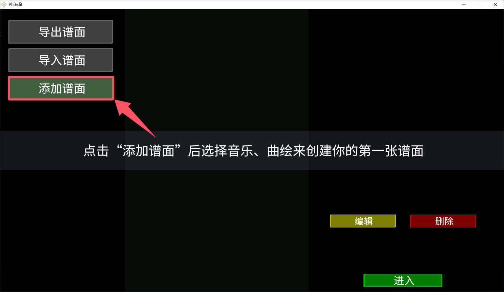

各位可以点击这里进行下载， 或者进入RPE公测群（群号： 762386631 ）或者RPE频道（频道号： 673wedbk35 ）获取。
接下来，我们要安装RPE。 1.双击 rpe_install.exe ，打开安装程序。 2. 更改 / 选择 目标文件夹，点击安装。 3.安装程序会自动打开 RPE ，接下来请根据指示，开始创作你的第一张自制谱面吧！
点击图片 1-1 所指着的按钮， 接下来选择您将要写的谱面的曲目的音频与图片（曲绘）。

图片1-1